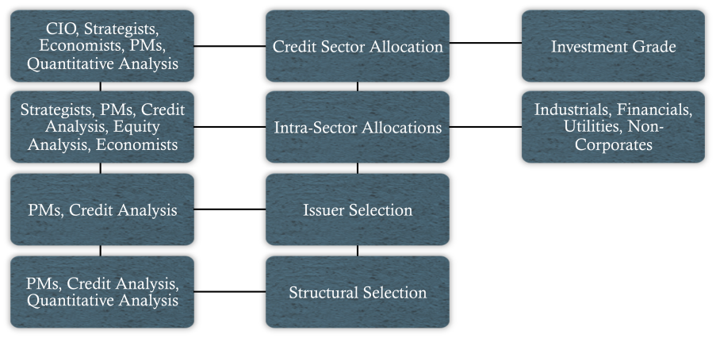

Definition: Refers to the ranking of fixed-income investments by sectors, structures, issuers, and issues in terms of their expected performance during some future period of time
Top-down approach
Focuses on high-level allocations among broadly defined credit asset classes
Attempts to form views on macro economic and industry developments to drive asset allocation decisions
Bottom-up approach
Focuses on individual issuers and issues that will outperform their peer groups
Attempts to outperform benchmark via superior security selection
Relative Value Analysis
Definition: Dialectical process combining elements of both top-down and bottom-up approaches to portfolio management

Relative-Value Methodologies
Total return analysis
Primary market analysis
Liquidity and trading analysis
Secondary trading rationales and constraints analysis
Spread analysis
Structure analysis
Credit curve analysis
Credit analysis
Asset allocation/sector analysis
Total Return Analysis
Definition: A process involving the detailed dissection of past returns and a projection of expected returns
Primary Market Analysis
Definition: Analysis of supply and demand dynamics
Market-structure dynamics (i.e. composition of global credit bond market: MTNs, derivatives, HY instruments, etc.)
Product structure effects (e.g. bullet and intermediate-maturity structures
Liquidity and Trading Analysis
Definition: A process involving the examination of how short- and long-term liquidity needs influence portfolio management decisions
Secondary Trade Rationales
Common rationales:
Yield/spread pickup trades
Credit-upside trades
Credit-defense trades
New issue swaps
Sector-rotation trades
Curve-adjustment trades
Structure trades
Cash flow reinvestment
Constraints:
Portfolio constraints
"Story" disagreement
Buy-and-hold
Seasonality
Spread Analysis
Mean-reversion analysis - a relative value analysis based on the assumption that the spread between two sectors/issuers will revert to its historical average
Quality-spread analysis - examines the spread differentials between low- and high-quality credits
Percent yield analysis - the ratio of credit yields to government yields for similar duration securities
Structural Analysis
Definition: Analyzing the performance of different structures
Bullets
Front-end, intermediate, and back-end
Callables
Sinking funds
Allow issuers to execute a series of partial calls prior to maturity
Putables
Credit Curve Analysis
Credit curves typically positively sloped
Spread curve typically steepens when interest rate and general credit risk increases
Credit Analysis
Definition: Analysis involving the study of issuers' financial statements and accounting techniques, interviewing issuers' managements, evaluating industry issues, reading indentures and charters, and developing an awareness of the veiws of rating agencies regarding various industries and issures